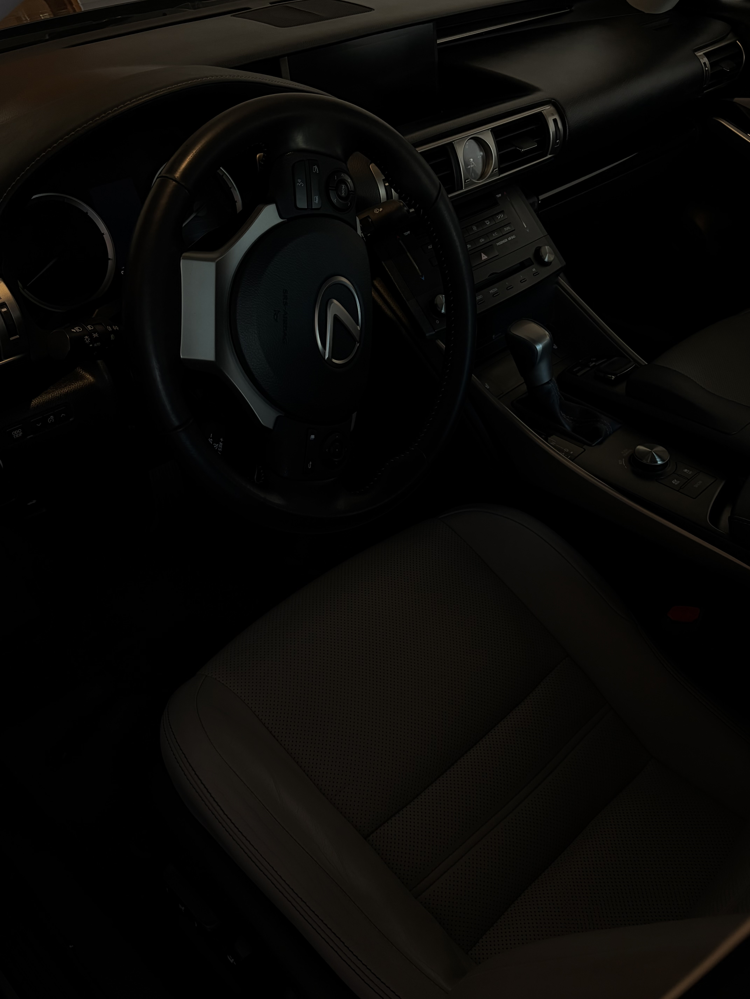
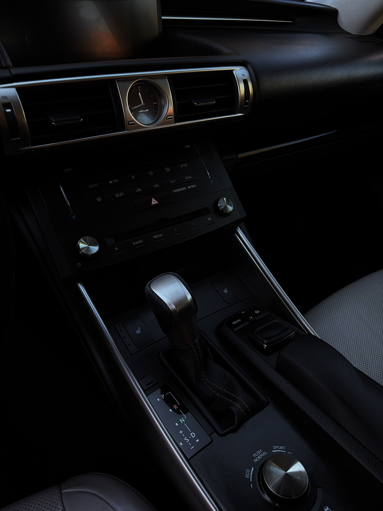

Mélyreható kárpittisztítás, kíméletes bőrápolás és precíz utastér-fertőtlenítés Gödön. Nem futószalagon dolgozom: minden autóra pontosan annyi időt szánok, amennyi a tökéletes végeredményhez szükséges.
1 autó
Teljes fókusz egy időben
100%
Belső fókusz & precizitás
Göd
Hernád köz • Zárt beálló
Foglaláskor a megjegyzés mezőben egyszerűen írd be az autó típusát és a választott csomagot.
Rendszeresen karbantartott autók alapos frissítéséhez.
Teljes megújulás: folteltávolítás, kárpittisztítás és bőrápolás.
Csíkmentes kijelzők, matt gyári hatású műszerfal, pormentes szellőzők és mélytisztított kárpitok.

Bőrápolás & Üléskárpit
Zsírmentes, matt gyári felület és mélytisztított varrások

Középkonzol & Szellőzők
Ecsetes portalanítás és kíméletes műszerfal-ápolás
Válaszd ki lent a számodra ideális pénteki, szombati vagy vasárnapi sávot, és írd be az autód típusát.
A sikeres foglalást követően a visszaigazolásban azonnal megkapod a pontos gödi házszámot (Hernád köz) és a naptármeghívót.
Leadás után nem szükséges helyben várakoznod: 30 perccel a befejezés előtt telefonon értesítelek, így kényelmesen visszaérsz az autódért.
Fontos tudnivaló az érkezéshez
A munka jellege miatt helyszíni váróterem nincs — kérlek, az autó leadását úgy tervezd, hogy a tisztítás idejére kísérővel vagy egyénileg távozni tudj, amíg telefonon jelzem az elkészülést.
Kattints a kívánt napra és órára az alábbi naptárban. A megjegyzésbe kérlek írd be az autó típusát és a választott csomagot (Alap vagy Prémium).
Nem tölt be a naptár a böngésződben? Nyisd meg a foglalási oldalt új lapon →